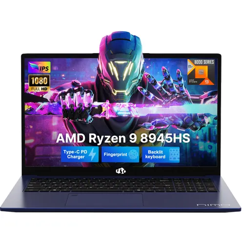
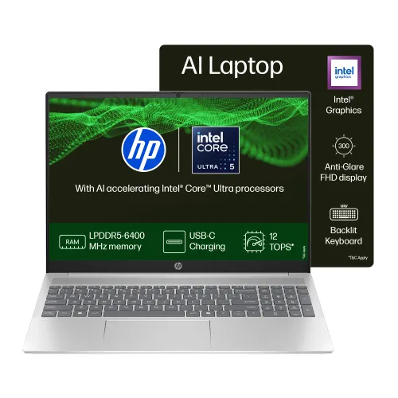
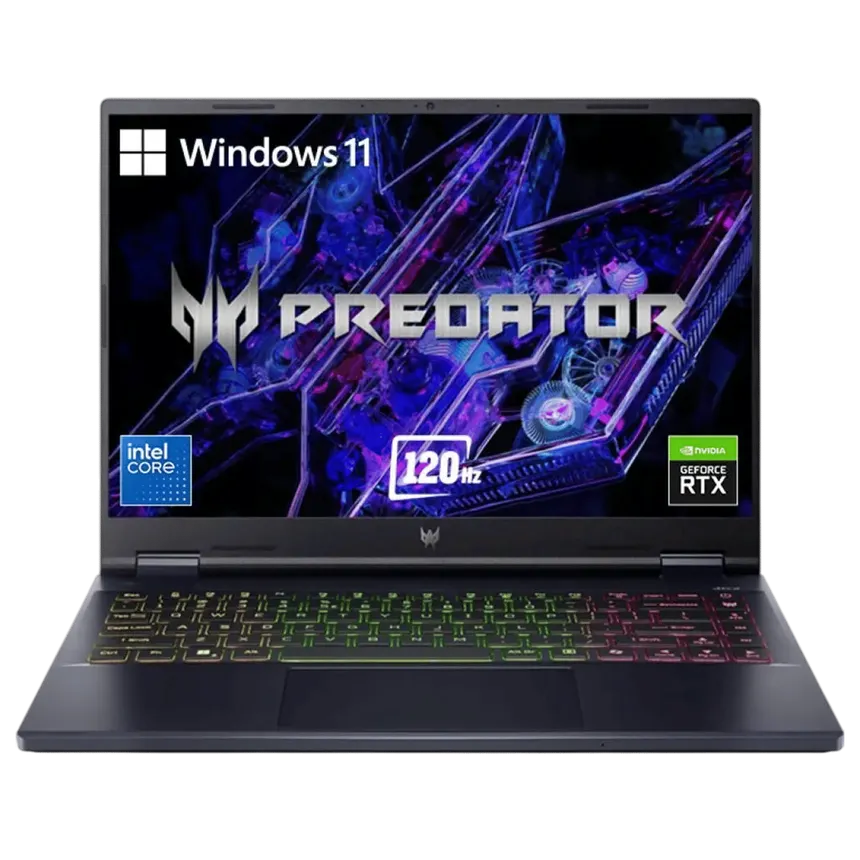

Welcome to the Laptop Comparison Guide. This page is designed to help students and professionals choose the right laptop for their needs. Here you will find product images, buying factors, and a detailed comparison table. The guide explains important technical terms and provides expert recommendations. By reviewing this page, you can make an informed decision before purchasing your next laptop.



| Product | Processor | RAM | Storage | Display | Battery | Price | Warranty | Best For | Link |
|---|---|---|---|---|---|---|---|---|---|
| Laptop A | Intel i5 | 8 GB | 512 GB SSD | 15.6" FHD | 6 Hours | ₹55,000 | 1 Year | Students | Buy Now |
| Laptop B | Intel i7 | 16 GB | 1 TB SSD | 15.6" FHD | 8 Hours | ₹75,000 | 2 Years | Developers | Buy Now |
| Laptop C | AMD Ryzen 5 | 8 GB | 512 GB SSD | 14" FHD | 7 Hours | ₹60,000 | 1 Year | Office Work | Buy Now |
| Laptop D | Intel i9 | 32 GB | 2 TB SSD | 17" 4K | 5 Hours | ₹1,20,000 (Offer) | 3 Years | Gaming | Buy Now |
“For most students, Laptop A offers the best balance of performance and affordability. However, if you are into gaming or heavy development, Laptop D is the recommended choice.”
# Sample Laptop Specs
Processor: Intel i7
RAM: 16 GB DDR4
Storage: 1 TB SSD
GPU: NVIDIA RTX 3060
Battery: 8 Hours